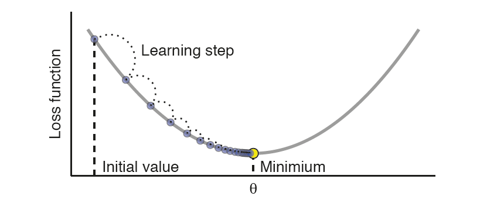
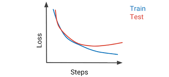

Neural Network Visualization Tool
What Am I Looking At?
In the age of AI, many view artificial intelligence systems as mysterious, almost magical. However, behind the curtain of these advanced technologies lie mathematical principles that allow machines to learn, make decisions, and improve their predictions over time. Neural networks, a key component of many AI tools, aren't magic—they're structured algorithms inspired by the way the human brain works, processing data in a very logical, mathematical way.
This neural network visualization tool gives you a hands-on experience with a simplified version of these systems. Think of each neuron (node) in a network as a decision-maker, with "weights" that influence how much it contributes to the overall output. For example, H2N2 is a node in the second hidden layer. By adjusting these weights, you change how the network behaves—much like tweaking settings on a machine to get the outcome you want.
For example, try entering an input of 3 and see if you can manipulate the weights to produce an output of 64. By experimenting, you’ll see how these simple changes impact the network’s final decision, helping to demystify the workings of AI and showing you the logic behind the output.
Where Is The Math?
At the heart of neural networks are mathematical concepts that help process and transform data. One of the key ideas is linear algebra, which is used to move and manipulate data as it passes through the layers of neurons. Each connection between neurons is assigned a "weight," which affects the input data and, in turn, influences the network's output.
Current Neural Network Equation
$$\text{Equation will appear here...}$$
In the equation above, feel free to change the weights of certain nodes to see how the equation of this neural network changes in real time. To make predictions more accurate, neural networks use a process called gradient descent. After making an initial prediction, the network calculates how far off it is from the correct answer—a difference known as the loss. Through gradient descent, the network adjusts the weights to minimize this loss, gradually improving with each iteration. This process repeats until the network becomes good at making predictions.

Another key concept is the activation function, which helps the network learn complex patterns. Simple models wouldn’t be able to solve intricate problems without these functions. Common activation functions include ReLU (Rectified Linear Unit), which introduces non-linearity and allows the network to tackle more complicated tasks, and sigmoid, which is used in models where outputs need to be between 0 and 1.
Lastly, backpropagation plays a crucial role in learning. This process uses calculus (specifically the chain rule) to determine how much each neuron contributed to the final error. By adjusting the weights accordingly, the network learns from its mistakes and gradually improves its accuracy.

Types of Neural Networks
Neural networks come in various forms, each tailored for specific types of problems:
- Feedforward Neural Networks (FNNs): These are the simplest types of networks where data flows in one direction—from input to output—without looping back. They are typically used for straightforward tasks like basic pattern recognition.
- Convolutional Neural Networks (CNNs): Designed specifically for image data, CNNs are excellent at detecting patterns such as edges, textures, or shapes in images. They're widely used in fields like facial recognition and medical imaging.
- Recurrent Neural Networks (RNNs): These networks excel at handling sequences of data, such as text, speech, or time-series information. RNNs can remember previous steps in the sequence, making them powerful for tasks like language translation or stock market predictions.
What is Bias in Neural Networks?
Along with weights, neural networks also use biases. A bias is an additional number added to the neuron's output to help the model learn more flexible patterns. Think of biases as extra fine-tuning knobs that allow the network to adjust its predictions more precisely. They help ensure that the network doesn’t get stuck making overly simple predictions and can adapt to more complex data scenarios.
Epochs, Batch Size, and Iterations
There are three key terms you need to know when training a neural network:
- Epoch: One complete cycle where the entire dataset passes through the network.
- Batch Size: Instead of feeding all data at once, it's broken into smaller chunks (batches). After each batch, the weights get updated, making training more efficient.
- Iteration: This refers to one update of the network's weights. Since a full epoch can involve multiple batches, there are multiple iterations within a single epoch.
Overfitting and Regularization
One common problem with neural networks is overfitting. This happens when the model becomes too good at predicting based on the training data, but it performs poorly on new, unseen data. It’s like memorizing answers to a test without understanding the concepts behind them. To prevent overfitting, techniques like Dropout (randomly turning off neurons during training) and L2 Regularization (which discourages large weight values) are used to make the model more general and robust.
Evaluation Metrics
Once a neural network is trained, it’s important to evaluate how well it performs. Several metrics help us do that:
- Accuracy: The percentage of correct predictions.
- Precision: The ratio of true positive predictions to all positive predictions made by the network.
- Recall: The ratio of true positives to the actual number of positives in the data.
- Mean Squared Error (MSE): Common in regression tasks, MSE calculates how far off the network’s predictions are from the true values.
Learning Curves
Learning curves are visual tools that help track a network’s progress during training. They plot the network’s performance on both the training data and a separate validation set, allowing you to see if the model is improving or if it’s overfitting. A good learning curve shows a decreasing loss over time for both the training and validation sets. A neural network is typically done training on data once the learning curve converges.

Hyperparameter Tuning
The performance of a neural network can often be enhanced by adjusting hyperparameters, such as the learning rate, the number of layers, or the number of neurons in each layer. These parameters are set before training begins, and tuning them correctly can make a big difference in how well the network performs. Techniques like grid search (testing multiple parameter combinations) and random search (sampling a random subset of possible hyperparameters) are common ways to find the best settings for a network.